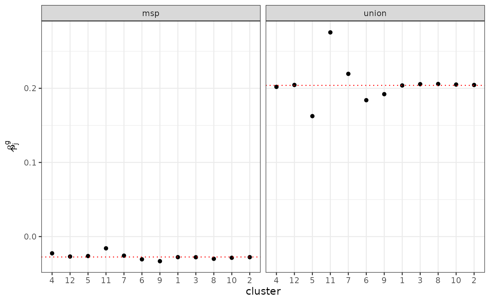

Introduction
The summclust package allows to compute leverage statistics for clustered errors and fast CRV3(J) variance-covariance matrices as described in MacKinnon, J.G., Nielsen, M.Ø., Webb, M.D., 2022. Leverage, influence, and the jackknife in clustered regression models: Reliable inference using summclust.
It is a post-estimation command and currently supports methods for objects of type lm (from stats) and fixest (from the fixest package).
The summclust function
library(summclust)
library(lmtest)
library(haven)
nlswork <- read_dta("http://www.stata-press.com/data/r9/nlswork.dta")
# drop NAs at the moment
nlswork <- nlswork[, c("ln_wage", "grade", "age", "birth_yr", "union", "race", "msp", "ind_code")]
nlswork <- na.omit(nlswork)
lm_fit <- lm(
ln_wage ~ as.factor(grade) + as.factor(age) + as.factor(birth_yr) + union + race + msp,
data = nlswork)
summclust_res <- summclust(
obj = lm_fit,
cluster = ~ind_code,
params = c("msp", "union")
)
# CRV3-based inference - exactly matches output of summclust-stata
coeftable(summclust_res)
#> coef tstat se p_val conf_int_l conf_int_u
#> union 0.2039597 2.440122 0.08358587 0.03281561 0.01998847 0.387930980
#> msp -0.0275151 -1.956404 0.01406412 0.07628064 -0.05847002 0.003439815
summary(summclust_res)
#> coef tstat se p_val conf_int_l conf_int_u
#> union 0.2039597 2.440122 0.08358587 0.03281561 0.01998847 0.387930980
#> msp -0.0275151 -1.956404 0.01406412 0.07628064 -0.05847002 0.003439815
#>
#> leverage partial-leverage-msp partial-leverage-union beta-msp
#> Min. 0.09332052 0.0006662968 0.001622359 -0.03320040
#> 1st Qu. 0.70440923 0.0048899422 0.009133996 -0.02893131
#> Median 3.51549151 0.0379535242 0.056682344 -0.02776470
#> Mean 5.41666667 0.0833333333 0.083333333 -0.02691999
#> 3rd Qu. 6.41132962 0.1004277711 0.106083114 -0.02610221
#> Max. 20.28918187 0.3597669210 0.312994532 -0.01583453
#> beta-union
#> Min. 0.1624754
#> 1st Qu. 0.1994694
#> Median 0.2045197
#> Mean 0.2053997
#> 3rd Qu. 0.2056569
#> Max. 0.2754228To visually inspect the leverage statistics, use the plot method
plot(summclust_res)
#> $residual_leverage#>
#> $coef_leverage
#>
#> $coef_beta
Using summclust with coefplot and fixest
Note that you can also use CVR3 and CRV3J covariance matrices computed via summclust or its vcov_CR3J method with the lmtest() and fixest packages.
library(lmtest)
library(fixest)
vcov3J <-
vcov_CR3J(
lm_fit,
cluster = ~ ind_code
)
all.equal(
vcov3J,
summclust_res$vcov
)
#> [1] TRUE
df <- length(summclust_res$cluster) - 1
# with lmtest
CRV1 <- coeftest(lm_fit, sandwich::vcovCL(lm_fit, ~ind_code), df = df)
CRV3 <- coeftest(lm_fit, vcov3J, df = df)
CRV1[c("union", "race", "msp"),]
#> Estimate Std. Error t value Pr(>|t|)
#> union 0.20395972 0.061167499 3.334446 0.0066585766
#> race -0.08619813 0.016150418 -5.337207 0.0002384275
#> msp -0.02751510 0.009293046 -2.960827 0.0129561148
CRV3[c("union", "race", "msp"),]
#> Estimate Std. Error t value Pr(>|t|)
#> union 0.20395972 0.08358587 2.440122 0.032815614
#> race -0.08619813 0.01904684 -4.525586 0.000864074
#> msp -0.02751510 0.01406412 -1.956404 0.076280639
confint(CRV1)[c("union", "race", "msp"),]
#> 2.5 % 97.5 %
#> union 0.06933097 0.338588481
#> race -0.12174496 -0.050651302
#> msp -0.04796896 -0.007061245
confint(CRV3)[c("union", "race", "msp"),]
#> 2.5 % 97.5 %
#> union 0.01998847 0.387930980
#> race -0.12811995 -0.044276312
#> msp -0.05847002 0.003439815
# with fixest
feols_fit <- feols(
ln_wage ~ as.factor(grade) + as.factor(age) + as.factor(birth_yr) + union + race + msp,
data = nlswork)
fixest::coeftable(
feols_fit,
vcov = summclust_res$vcov,
ssc = ssc(adj = FALSE, cluster.adj = FALSE)
)[c("msp", "union", "race"),]
#> Estimate Std. Error t value Pr(>|t|)
#> msp -0.02751510 0.01406412 -1.956404 5.043213e-02
#> union 0.20395972 0.08358587 2.440122 1.469134e-02
#> race -0.08619813 0.01904684 -4.525586 6.059226e-06The p-value and confidence intervals for fixest::coeftable() differ from lmtest::coeftest() and summclust::coeftable(). This is due to the fact that fixest::coeftable() uses a different degree of freedom for the t-distribution used in these calculation (I believe it uses t(N-1)).